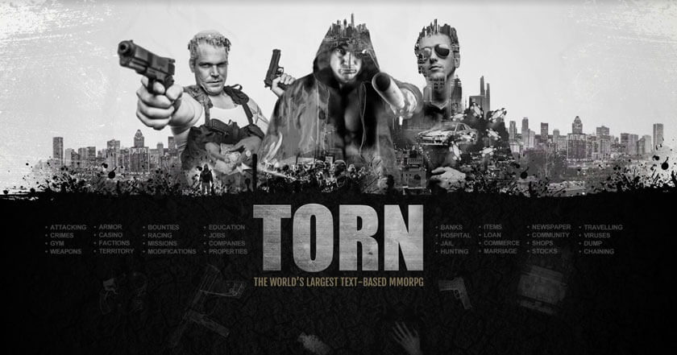
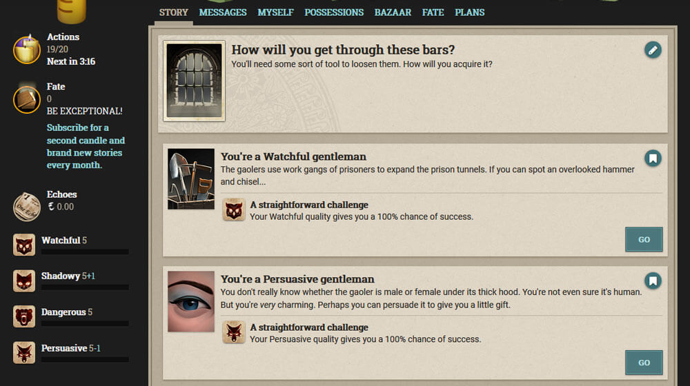

Text-based games
The biggest part of PBBGs are text-based. This means that there is little to no graphics, with the emphasis being on the text part. Their genres are pretty varied, ranging from fantasy to mob games.
Here are some the best:
Torn
Active since: 2004
Torn is a violent crime themed Role-playing game with more than 1.5 million players. The text based browser game is set in the murky underworld of Torn , where everyone's out for themselves. In Torn you can be who ever you want to be and do what ever you want to do. The game is endless in possibilities and with regular feature updates you'll soon discover something new to do within the city.
Fallen London
Active since: 2009
Fallen London (formerly Echo Bazaar) is a browser game produced by Failbetter Games. It's set in the eponymous city, a mile underground and a boat down the river from Hell, where people are either piecing together the mystery of what exactly happened, trading souls, or just politely murdering other people. Players start off as prisoners plotting to break out, and after that... they're free to do whatever they want.
Kingdom of Loathing

Active since: 2003
Kingdom of Loathing (KoL) is a humorous, browser-based, multiplayer role playing game. It is notable for its use of hand-drawn stick figure graphics and writing characterized by surreal humor, word play, parody and references to pop culture. In KoL, players fight monsters for experience, meat (the game's currency), and items, through a turn-based system. Players also interact with each other through player versus player competition, participate in the in-game economy by trading goods and services, and organize themselves into clans, and speak to each other in many different chat channels.
SimpleMMO

Active since: 2018
SimpleMMO is a simple, lightweight, text-based MMORPG that aims to redefine the text-based RPG genre. It consolidates and streamlines all of your favourite and quintessential MMORPG features into a simple bite-sized game. The social aspects of SimpleMMO are deep and it allows you to work and trade with other players to reach your goals. You can also battle world bosses, travel across many different lands, join giant guilds, craft items, hunt for materials, become a bounty hunter, trade on the marketplace, and so much more! It can be as simple or as deep as you want it to be. It can be played for 5 minutes, or a few hours. It has been built to cater both sets of players. The choice is entirely yours!